Full-label standard nucleus crops 47 unchanged candidate labels from the validated pixel audit. Source-label edges and clipped crop padding are distinct. No crop is an accepted standard measurement. Record manual decisions in the paired-mask review .
Process_413_green.ome.tiff::tile_y000000_x016384.tiff::1 Specimen 32469; source-label edge: no; crop padding clipped: no.
Raw green channel Whole nucleus label 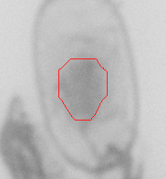
Label outline Process_413_green.ome.tiff::tile_y000000_x032768.tiff::1 Specimen 32469; source-label edge: no; crop padding clipped: no.
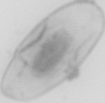
Raw green channel 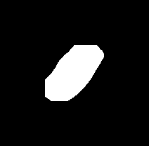
Whole nucleus label Label outline Process_413_green.ome.tiff::tile_y000000_x032768.tiff::2 Specimen 32469; source-label edge: no; crop padding clipped: no.
Raw green channel Whole nucleus label Label outline Process_413_green.ome.tiff::tile_y000000_x036864.tiff::1 Specimen 32469; source-label edge: no; crop padding clipped: no.
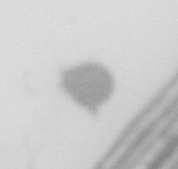
Raw green channel Whole nucleus label Label outline Process_413_green.ome.tiff::tile_y004096_x016384.tiff::1 Specimen 32469; source-label edge: no; crop padding clipped: no.
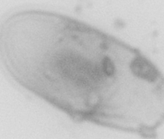
Raw green channel Whole nucleus label 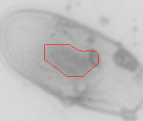
Label outline Process_413_green.ome.tiff::tile_y004096_x036864.tiff::1 Specimen 32469; source-label edge: no; crop padding clipped: no.
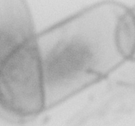
Raw green channel Whole nucleus label 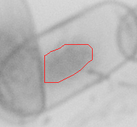
Label outline Process_413_green.ome.tiff::tile_y004096_x036864.tiff::2 Specimen 32469; source-label edge: no; crop padding clipped: no.
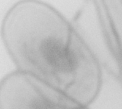
Raw green channel Whole nucleus label Label outline Process_413_green.ome.tiff::tile_y004096_x036864.tiff::3 Specimen 32469; source-label edge: no; crop padding clipped: no.
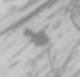
Raw green channel Whole nucleus label Label outline Process_413_green.ome.tiff::tile_y004096_x036864.tiff::4 Specimen 32469; source-label edge: no; crop padding clipped: no.
Raw green channel 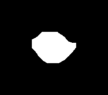
Whole nucleus label 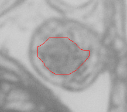
Label outline Process_413_green.ome.tiff::tile_y004096_x036864.tiff::5 Specimen 32469; source-label edge: no; crop padding clipped: no.
Raw green channel Whole nucleus label Label outline Process_413_green.ome.tiff::tile_y004096_x036864.tiff::6 Specimen 32469; source-label edge: no; crop padding clipped: no.
Raw green channel Whole nucleus label 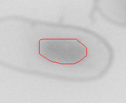
Label outline Process_413_green.ome.tiff::tile_y004096_x036864.tiff::7 Specimen 32469; source-label edge: no; crop padding clipped: no.
Raw green channel Whole nucleus label Label outline Process_413_green.ome.tiff::tile_y004096_x036864.tiff::8 Specimen 32469; source-label edge: no; crop padding clipped: no.
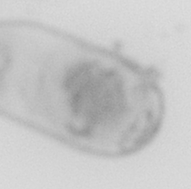
Raw green channel Whole nucleus label Label outline Process_413_green.ome.tiff::tile_y008192_x045056.tiff::1 Specimen 32469; source-label edge: no; crop padding clipped: no.
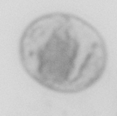
Raw green channel Whole nucleus label Label outline Process_413_green.ome.tiff::tile_y008192_x045056.tiff::2 Specimen 32469; source-label edge: no; crop padding clipped: no.
Raw green channel Whole nucleus label Label outline Process_413_green.ome.tiff::tile_y008192_x045056.tiff::3 Specimen 32469; source-label edge: no; crop padding clipped: no.
Raw green channel Whole nucleus label 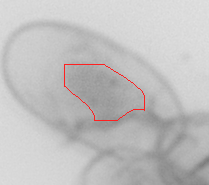
Label outline Process_413_green.ome.tiff::tile_y008192_x045056.tiff::4 Specimen 32469; source-label edge: yes; crop padding clipped: yes.
Raw green channel Whole nucleus label Label outline Process_413_green.ome.tiff::tile_y008192_x045056.tiff::5 Specimen 32469; source-label edge: no; crop padding clipped: no.
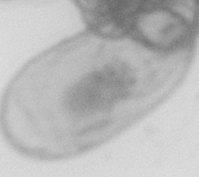
Raw green channel Whole nucleus label Label outline Process_413_green.ome.tiff::tile_y020480_x049152.tiff::1 Specimen 32469; source-label edge: no; crop padding clipped: no.
Raw green channel 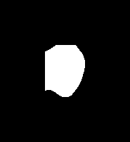
Whole nucleus label 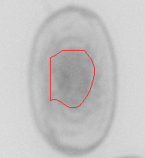
Label outline Process_413_green.ome.tiff::tile_y024576_x000000.tiff::1 Specimen 32469; source-label edge: no; crop padding clipped: no.
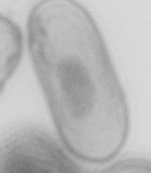
Raw green channel 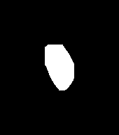
Whole nucleus label Label outline Process_413_green.ome.tiff::tile_y024576_x000000.tiff::2 Specimen 32469; source-label edge: no; crop padding clipped: no.
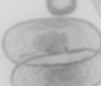
Raw green channel 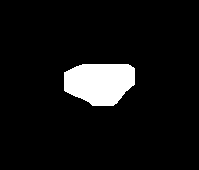
Whole nucleus label 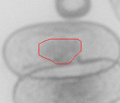
Label outline Process_413_green.ome.tiff::tile_y024576_x000000.tiff::3 Specimen 32469; source-label edge: no; crop padding clipped: no.
Raw green channel 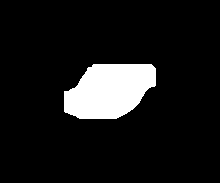
Whole nucleus label 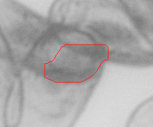
Label outline Process_413_green.ome.tiff::tile_y032768_x008192.tiff::1 Specimen 32469; source-label edge: no; crop padding clipped: no.
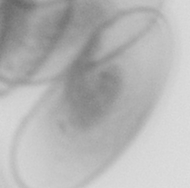
Raw green channel Whole nucleus label Label outline Process_413_green.ome.tiff::tile_y032768_x008192.tiff::2 Specimen 32469; source-label edge: no; crop padding clipped: no.
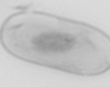
Raw green channel Whole nucleus label 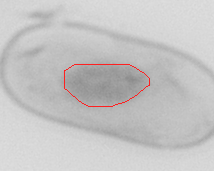
Label outline Process_413_green.ome.tiff::tile_y032768_x008192.tiff::3 Specimen 32469; source-label edge: no; crop padding clipped: no.
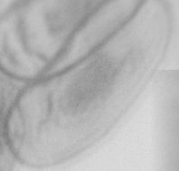
Raw green channel 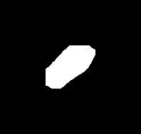
Whole nucleus label 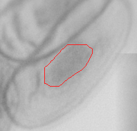
Label outline Process_413_green.ome.tiff::tile_y032768_x008192.tiff::4 Specimen 32469; source-label edge: no; crop padding clipped: no.
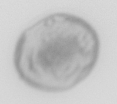
Raw green channel 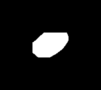
Whole nucleus label 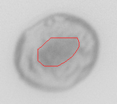
Label outline Process_413_green.ome.tiff::tile_y032768_x012288.tiff::1 Specimen 32469; source-label edge: no; crop padding clipped: no.
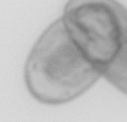
Raw green channel Whole nucleus label 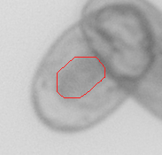
Label outline Process_413_green.ome.tiff::tile_y032768_x012288.tiff::2 Specimen 32469; source-label edge: no; crop padding clipped: no.
Raw green channel Whole nucleus label 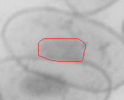
Label outline Process_413_green.ome.tiff::tile_y032768_x012288.tiff::3 Specimen 32469; source-label edge: no; crop padding clipped: no.
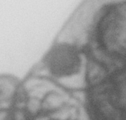
Raw green channel Whole nucleus label Label outline Process_413_green.ome.tiff::tile_y032768_x012288.tiff::4 Specimen 32469; source-label edge: no; crop padding clipped: no.
Raw green channel Whole nucleus label 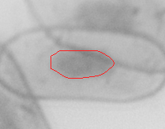
Label outline Process_413_green.ome.tiff::tile_y032768_x012288.tiff::5 Specimen 32469; source-label edge: no; crop padding clipped: no.
Raw green channel Whole nucleus label Label outline Process_414_green.ome.tiff::tile_y000000_x024576.tiff::1 Specimen 32470; source-label edge: no; crop padding clipped: no.
Raw green channel 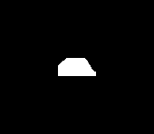
Whole nucleus label Label outline Process_414_green.ome.tiff::tile_y000000_x024576.tiff::2 Specimen 32470; source-label edge: no; crop padding clipped: no.
Raw green channel Whole nucleus label Label outline Process_414_green.ome.tiff::tile_y000000_x024576.tiff::3 Specimen 32470; source-label edge: no; crop padding clipped: no.
Raw green channel Whole nucleus label 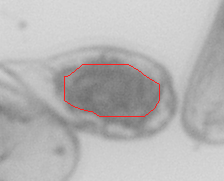
Label outline Process_414_green.ome.tiff::tile_y000000_x024576.tiff::4 Specimen 32470; source-label edge: no; crop padding clipped: no.
Raw green channel Whole nucleus label 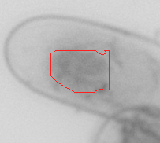
Label outline Process_414_green.ome.tiff::tile_y000000_x024576.tiff::5 Specimen 32470; source-label edge: no; crop padding clipped: no.
Raw green channel 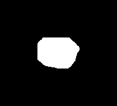
Whole nucleus label 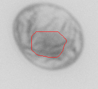
Label outline Process_414_green.ome.tiff::tile_y000000_x028672.tiff::1 Specimen 32470; source-label edge: no; crop padding clipped: yes.
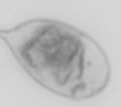
Raw green channel Whole nucleus label Label outline Process_414_green.ome.tiff::tile_y020480_x012288.tiff::1 Specimen 32470; source-label edge: no; crop padding clipped: no.
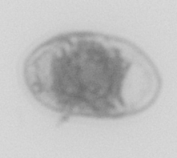
Raw green channel Whole nucleus label Label outline Process_414_green.ome.tiff::tile_y020480_x012288.tiff::2 Specimen 32470; source-label edge: no; crop padding clipped: no.
Raw green channel Whole nucleus label 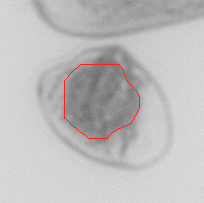
Label outline Process_414_green.ome.tiff::tile_y020480_x036864.tiff::1 Specimen 32470; source-label edge: no; crop padding clipped: no.
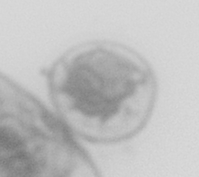
Raw green channel Whole nucleus label Label outline Process_414_green.ome.tiff::tile_y020480_x040960.tiff::1 Specimen 32470; source-label edge: no; crop padding clipped: yes.
Raw green channel Whole nucleus label Label outline Process_414_green.ome.tiff::tile_y028672_x016384.tiff::1 Specimen 32470; source-label edge: no; crop padding clipped: no.
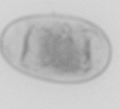
Raw green channel Whole nucleus label Label outline Process_414_green.ome.tiff::tile_y028672_x016384.tiff::2 Specimen 32470; source-label edge: no; crop padding clipped: no.
Raw green channel Whole nucleus label Label outline Process_414_green.ome.tiff::tile_y028672_x040960.tiff::1 Specimen 32470; source-label edge: no; crop padding clipped: no.
Raw green channel Whole nucleus label Label outline Process_414_green.ome.tiff::tile_y028672_x065536.tiff::1 Specimen 32470; source-label edge: no; crop padding clipped: no.
Raw green channel Whole nucleus label Label outline Process_414_green.ome.tiff::tile_y028672_x065536.tiff::2 Specimen 32470; source-label edge: no; crop padding clipped: no.
Raw green channel Whole nucleus label Label outline Process_414_green.ome.tiff::tile_y028672_x065536.tiff::3 Specimen 32470; source-label edge: no; crop padding clipped: no.
Raw green channel Whole nucleus label Label outline